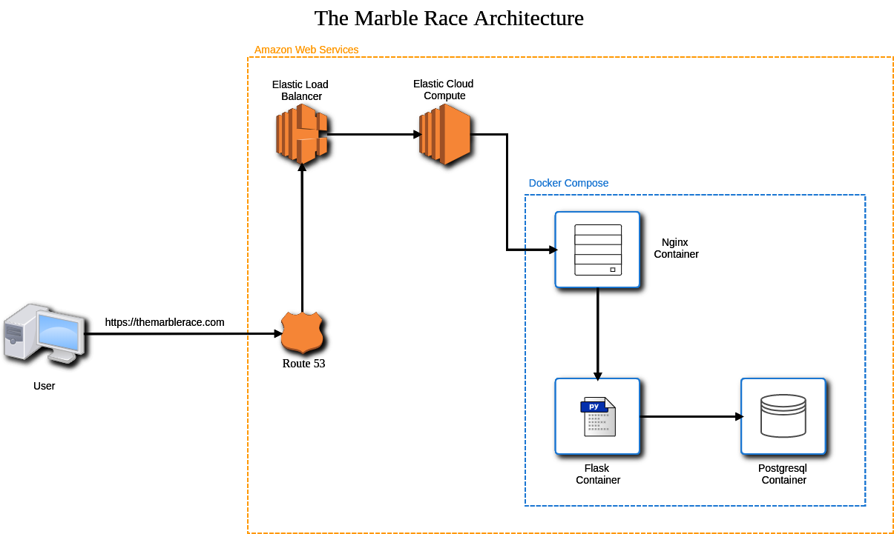

This website was primarily built with Flask - a Python micro web-framework. Using Flask allows the application logic to be written in Python while still providing support for common website functionality through many Flask Extensions. Flask_sqlalchemy, for example, is used to make communicating with the database much simpler and makes initializing a database easier with a class-based ORM. This also leads to an easier front-end development as it benefits from the use of Jinja Templates. These templates are used to dynamically generate in-page content from data stored in the database.
The Postgresql database supporting this website stores, among other things, race data which is used, in
conjunction with Jinja, to dynamically fill front-end tables and graphs with data. An example of this
can be seen on the home page in the graph (built with Chart.js). The data from the database is calculated
on the fly before being rendered into the graph. Some of these values can be seen in the data tables at
/data.
All of these components are isolated in Docker containers along with a third container running an Nginx server. Orchestration is handled by Docker-Compose which allows for app mobility and modularity. In development, the entire app can be run in a completely independent local environment on any machine that has Docker-Compose installed.
This modularity plays a part in providing the simplicity needed to migrate the application from its development envrionment on a local machine into an AWS EC2 instance. The app simply runs inside of the EC2 instance while an Elastic Load Balancer handles traffic that comes from the network via Route 53's DNS service.